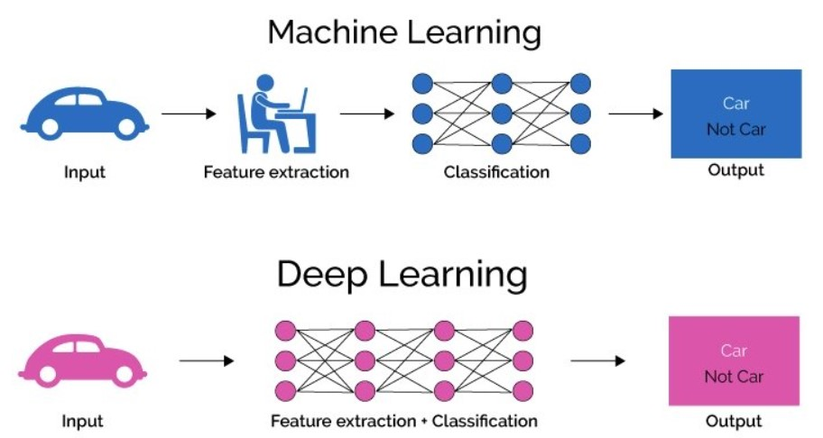

What is Deep Learning?
Deep Learning is a branch of Artificial Intelligence (AI) and Machine Learning (ML) that focuses on using large, complex neural networks to analyze data, identify patterns, and make decisions. It mimics how the human brain processes information by using layers of interconnected nodes to create models that can learn from data.
Deep Learning is used in tasks such as image recognition, natural language processing, and speech recognition, achieving remarkable accuracy compared to traditional machine learning techniques.
How is Deep Learning Different from Machine Learning?
While both Deep Learning and Machine Learning are subsets of AI, they differ in how they process data:
- Machine Learning: Relies on structured data and requires feature extraction, where humans specify the important aspects of data for the algorithm to learn.
- Deep Learning: Automatically extracts features from raw data using neural networks, eliminating the need for manual intervention.
Deep Learning excels in tasks with large amounts of unstructured data, like images and text, but requires more computational power and training data than traditional ML techniques.
Basic Components of Deep Learning
1. Neural Networks
Neural networks are the foundation of deep learning. They consist of layers of interconnected nodes (neurons) that process data. Each layer transforms the data and passes it to the next layer, gradually learning more complex patterns.
2. Nodes
A node (or neuron) is a unit in the neural network that receives input, processes it using a mathematical function, and generates output. Nodes are organized into layers, and each connection between nodes has a weight that adjusts during training.
3. Layers
Layers are the building blocks of neural networks. There are three types of layers:
- Input Layer: Takes raw data as input (e.g., an image or text).
- Hidden Layers: Perform computations and learn patterns. A deep network has multiple hidden layers.
- Output Layer: Produces the final result, such as classifying an image as "cat" or "dog."